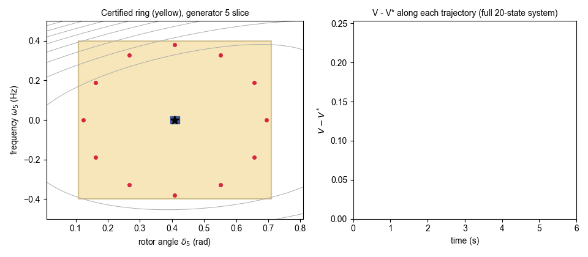
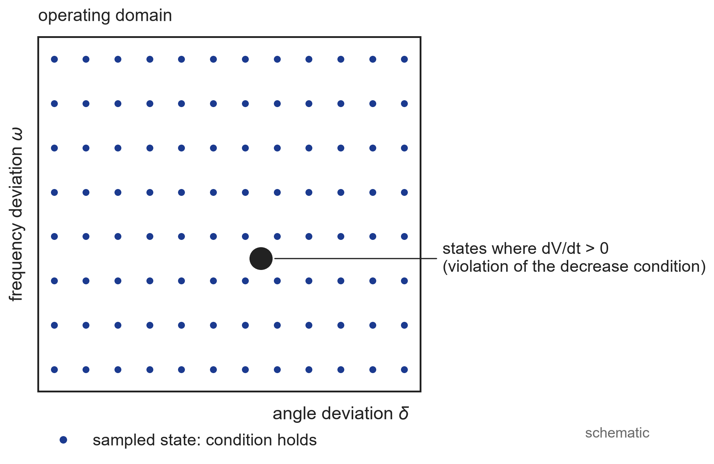
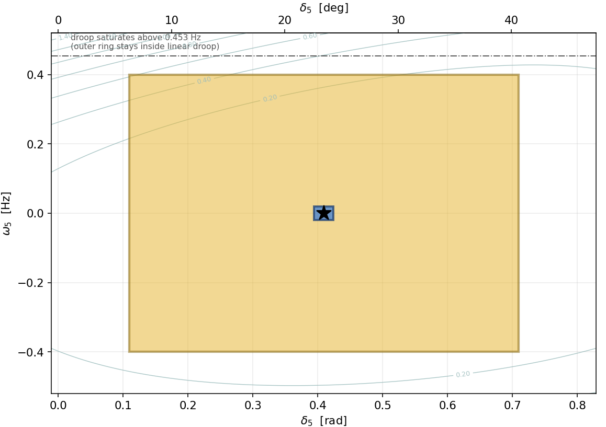

Learning Lyapunov Functions for Power System Transient Stability
Neural Verification and Retraining
Queens High School for the Sciences at York College · New York University
Tackling Climate Change with Machine Learning workshop, NeurIPS 2026

Summary
As more of the grid runs on inverters and learned controllers, operators need a way to know a controller will keep the system stable after a disturbance. A Lyapunov function proves that, and recent work learns one with a neural network. But a learned function is usually checked by sampling, and sampling only visits points while a stability proof has to cover a whole region.
We take a neural Lyapunov function trained for the lossy New England 39-bus system. It satisfies the decrease condition on 99.98% of sampled states, and 200,000 random samples find no failure, yet a neural network verifier (CROWN with branch and bound) finds real violations, and a directed search hits them 6.1% of the time. We then put the verifier inside training: first using its counterexamples as training data, then differentiating through the verified bound itself, so the network is trained to be verifiable over the whole region.
Why sampling isn't enough


The certified region

The certificate holds on a ring around the operating point, excluding only a small neighborhood of the equilibrium (where the conditions are equalities no sound verifier can close). Certifying the ring proves convergence into that small neighborhood. Results are on two- and four-dimensional slices of the 20-state system; scaling the certificate to the full state is the open question this work points to.
Citation
@inproceedings{singh2026lyapunov,
title = {Learning Lyapunov Functions for Power System Transient Stability:
Neural Verification and Retraining},
author = {Singh, Sehaj Randhir and Cui, Wenqi},
booktitle = {Tackling Climate Change with Machine Learning workshop at NeurIPS},
year = {2026}
}